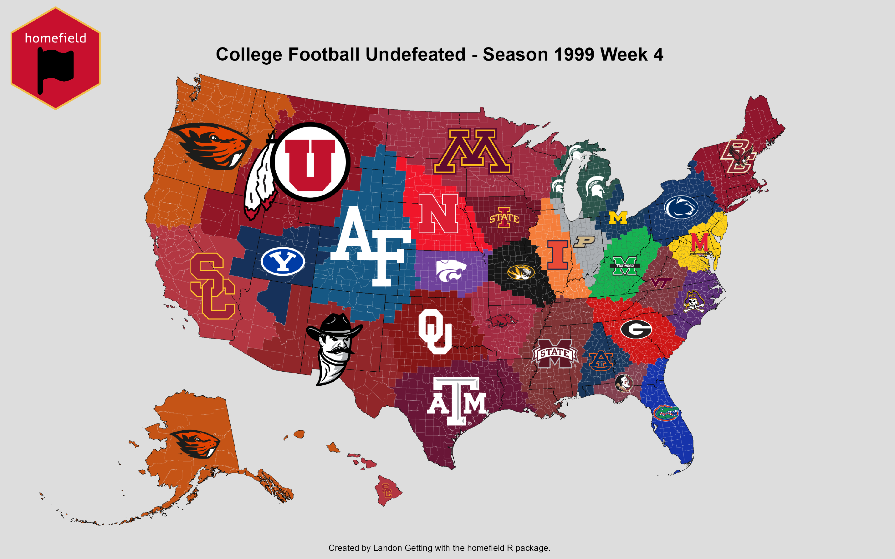

Overview
The homefield package helps gather data and create visualizations to show representation of entities spatially. 
Installation
Install the package via GitHub:
install_github("Landon-Getting/homefield")Follow the directions here to receive and install a College Football Data API Key. Required for homefield::cfb_undefeated() and homefield::cfb_conquest().
Follow the directions here to receive and install a CENSUS API Key. Required for homefield::homefield_stats().
homefield_map
homefield maps are created based on the attributes of entities including identifier, latitude, longitude, color, and image.
For example, a map may be composed of sport teams. The Iowa State Cyclones entity would have an entity identifier (Iowa State), a latitude (42.0266573), a longitude (-93.6464516), a color (#C8102E), and an image (http://a.espncdn.com/i/teamlogos/ncaa/500/66.png).
A dataframe with multiple entities and their attributes may look similar to the following:
entity <- c("Iowa State Cyclones", "Florida Gators", "UCLA Bruins")
lat <- c(42.01400, 29.64994, 34.16133)
lng <- c(-93.63577, -82.34858, -118.16765)
color <- c("#660015","#0021A5", "#ffc72c")
image <- c("http://a.espncdn.com/i/teamlogos/ncaa/500/66.png",
"http://a.espncdn.com/i/teamlogos/ncaa/500/57.png",
"http://a.espncdn.com/i/teamlogos/ncaa/500/26.png")
homefield_data <- data.frame(entity,
lat,
lng,
color,
image)
homefield_data## entity lat lng color
## 1 Iowa State Cyclones 42.01400 -93.63577 #660015
## 2 Florida Gators 29.64994 -82.34858 #0021A5
## 3 UCLA Bruins 34.16133 -118.16765 #ffc72c
## image
## 1 http://a.espncdn.com/i/teamlogos/ncaa/500/66.png
## 2 http://a.espncdn.com/i/teamlogos/ncaa/500/57.png
## 3 http://a.espncdn.com/i/teamlogos/ncaa/500/26.pngNext, the homefield map can be plotted with the dataframe and saved as a .png file to a specified location.
homefield_map(x = homefield_data, # dataframe
output_file = "C:/Users/lwget/Downloads/example_map.png", # save location
title = "Example Map", # map title
credit = "Landon Getting") # credit for author
The homefield package currently provides 2 functions to query interesting college football data directly into the necessary format: cfb_undefeated() and cfb_conquest(). Please see Installation for how to receive and install an College Football Database API key.
cfb_undefeated() returns a dataframe with the undefeated teams for a particular season and week. In cfb_conquest(), teams start with the land closest to them. As the season progresses, teams acquire the land of the teams they defeat.
cfb_undefeated_s1999_w4 <- cfb_undefeated(season = 1999, week = 4)
head(cfb_undefeated_s1999_w4)## # A tibble: 6 x 5
## entity lat lng color image
## <chr> <dbl> <dbl> <chr> <chr>
## 1 Air Force 39.0 -105. #004a7b http://a.espncdn.com/i/teamlogos/ncaa/500~
## 2 Arkansas 36.1 -94.2 #9c1831 http://a.espncdn.com/i/teamlogos/ncaa/500~
## 3 Auburn 32.6 -85.5 #03244d http://a.espncdn.com/i/teamlogos/ncaa/500~
## 4 Boston College 42.3 -71.2 #88001a http://a.espncdn.com/i/teamlogos/ncaa/500~
## 5 BYU 40.3 -112. #001E4C http://a.espncdn.com/i/teamlogos/ncaa/500~
## 6 East Carolina 35.6 -77.4 #4b1869 http://a.espncdn.com/i/teamlogos/ncaa/500~The dataframe output from cfb_undefeated() can be used directly in homefield_map().
homefield_map(x = cfb_undefeated_s1999_w4,
output_file = "C:/Users/lwget/Downloads/cfb_undefeated_s2022_w4.png",
title = "College Football Undefeated - Season 1999 Week 4",
credit = "Landon Getting")homefield_stats
homefield_stats() provides a dataframe with summary statistics about a particular map including the total land, water, and population within each entity’s territory.
The same dataframe used in the homefield_map() example can be used in homefield_stats().
cfb_undefeated_s1999_w4_stats <- homefield_stats(x = cfb_undefeated_s1999_w4)
head(cfb_undefeated_s1999_w4_stats)## # A tibble: 6 x 5
## entity land water domain pop
## <chr> <dbl> <dbl> <dbl> <dbl>
## 1 Air Force 610234978656 2533273302 612768251958 6638127
## 2 Arkansas 186833484833 4234865393 191068350226 5122951
## 3 Auburn 106215319059 4688840187 110904159246 4365585
## 4 Boston College 223771886456 31278621299 255050507755 31475972
## 5 BYU 292222970451 1844563724 294067534175 1448537
## 6 East Carolina 104201019210 15782222629 119983241839 7592900What are top 5 entities by population within their territory?
dplyr::slice_max(cfb_undefeated_s1999_w4_stats, # output from homefield_stats()
order_by = pop, # sorting by population
n = 5) |> # top 5
dplyr::select(entity, # selecting only entity and pop columns
pop)## # A tibble: 5 x 2
## entity pop
## <chr> <dbl>
## 1 USC 45943643
## 2 Boston College 31475972
## 3 Texas A&M 25347206
## 4 Maryland 23923885
## 5 Florida 20670766homefield_stats() can also create summary statistics for maps over time.
For example, homefield_stats() can be combined with cfb_undefeated() to show statistics over the course of a season.
# undefeated for each week, 0 through 15
cfb_undefeated_2022 <- list(cfb_undefeated(season = 2022, week = 0),
cfb_undefeated(season = 2022, week = 1),
cfb_undefeated(season = 2022, week = 2),
cfb_undefeated(season = 2022, week = 3),
cfb_undefeated(season = 2022, week = 4),
cfb_undefeated(season = 2022, week = 5),
cfb_undefeated(season = 2022, week = 6),
cfb_undefeated(season = 2022, week = 7),
cfb_undefeated(season = 2022, week = 8),
cfb_undefeated(season = 2022, week = 9),
cfb_undefeated(season = 2022, week = 10),
cfb_undefeated(season = 2022, week = 11),
cfb_undefeated(season = 2022, week = 12),
cfb_undefeated(season = 2022, week = 13),
cfb_undefeated(season = 2022, week = 14),
cfb_undefeated(season = 2022, week = 15))
# date of each week
cfb_dates_2022 <- lubridate::ymd(c("2022-08-27",
"2022-09-03",
"2022-09-10",
"2022-09-17",
"2022-09-24",
"2022-10-1",
"2022-10-8",
"2022-10-15",
"2022-10-22",
"2022-10-29",
"2022-11-5",
"2022-11-12",
"2022-11-19",
"2022-11-26",
"2022-12-3",
"2022-12-10"))
cfb_undefeated_2022_stats <- homefield_stats(x = cfb_undefeated_2022,
temporal = cfb_dates_2022,
keep_max = FALSE,
keep_visuals = TRUE)
# converting land from square meters to square miles
cfb_undefeated_2022_stats <- cfb_undefeated_2022_stats |>
dplyr::mutate(land = land/2.59e6)
head(cfb_undefeated_2022_stats)## # A tibble: 6 x 8
## entity land water domain pop color image time
## <chr> <dbl> <dbl> <dbl> <dbl> <chr> <chr> <date>
## 1 Air Force 73411. 521107189 190655011213 2.34e6 #004~ http~ 2022-08-27
## 2 Akron 5384. 3248833214 17194033794 3.10e6 #847~ http~ 2022-08-27
## 3 Alabama 9699. 306480683 25426302848 4.29e5 #690~ http~ 2022-08-27
## 4 Appalachian State 11483. 234291659 29974079506 1.46e6 #000~ http~ 2022-08-27
## 5 Arizona 23099. 87067435 59912411797 1.27e6 #002~ http~ 2022-08-27
## 6 Arizona State 66025. 381257352 171386369423 5.73e6 #942~ http~ 2022-08-27The dataframe output has summary statistics for each team and week. In this example, the population within Alabama’s territory increases throughout the season.
cfb_undefeated_2022_stats |>
dplyr::filter(entity == "Alabama") |>
dplyr::select(entity, pop, time) |>
head()## # A tibble: 6 x 3
## entity pop time
## <chr> <dbl> <date>
## 1 Alabama 429223 2022-08-27
## 2 Alabama 452185 2022-09-03
## 3 Alabama 2463971 2022-09-10
## 4 Alabama 4137329 2022-09-17
## 5 Alabama 8449732 2022-09-24
## 6 Alabama 9614778 2022-10-01homefield_racing
homefield_racing() can help visualize the state of homefield maps over time. homefield_stats() and cfb_undefeated() can be leveraged to develop a dataframe for homefield_racing().
homefield_racing(x = cfb_undefeated_2022_stats,
stat_name = "land",
title = "2022 Season Week by Week - Undefeated CFB homefield Map",
subtitle = "Area in Square Miles",
caption = "Data Source: cfbd.com",
output_file = "C:/Users/lwget/Downloads/cfb_undefeated_2022_racing.gif")homefield_shiny
homefield_shiny() showcases several functions from the homefield package in an interactive application. Users can choose a type of map, season, and week and the homefield map will be automatically generated.
Acknowledgements
Created as a part of Dr. Heike Hofmann’s STAT 585 at Iowa State University.
Inspired by u/CaptainScuttlebottom and u/jloose128 on Reddit